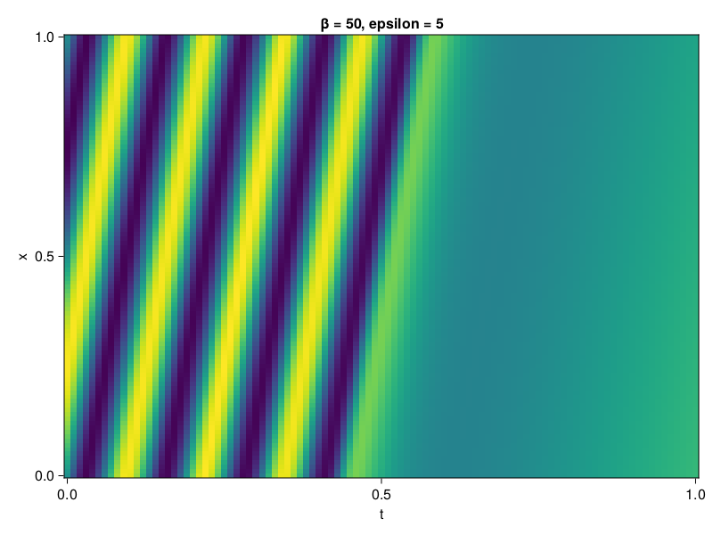

1D Convection Equation
Consider the following 1D-convection equation
\[\begin{aligned} &\frac{\partial u}{\partial t}+c \frac{\partial u}{\partial x}=0, x \in[0,1], t \in[0,1] \\ &u(x, 0)=sin(2\pi x) \\ &u(0,t) = -sin(2\pi ct)\\ &u(1,t) = -sin(2\pi ct) \end{aligned}\]
where $c = 50/2\pi$. First we solve it with QuasiRandomTraining.
using NeuralPDE, Lux, Random, Sophon, IntervalSets
using Optimization, OptimizationOptimJL, OptimizationOptimisers
using CUDA
CUDA.allowscalar(false)
@parameters x, t
@variables u(..)
Dₜ = Differential(t)
Dₓ = Differential(x)
β = 50
c = β/2π
eq = Dₜ(u(x,t)) + c * Dₓ(u(x,t)) ~ 0
u_analytic(x,t) = sin(2π*(x-c*t))
domains = [x ∈ 0..1, t ∈ 0..1]
bcs = [u(0,t) ~ u_analytic(0,t),
u(1,t) ~ u_analytic(1,t),
u(x,0) ~ sin(2π*x)]
@named convection = PDESystem(eq, bcs, domains, [x,t], [u(x,t)])
chain = FullyConnected(2, 1, tanh; num_layers = 5, hidden_dims = 50)
ps = Lux.initialparameters(Random.default_rng(), chain) |> GPUComponentArray64
discretization = PhysicsInformedNN(chain, QuasiRandomTraining(100); init_params=ps)
prob = discretize(convection, discretization)
@time res = Optimization.solve(prob, Adam(); maxiters = 6000)u: ComponentVector{Float64}(layer_1 = (weight = [0.30499040766024693 -0.3980611527171769; -0.2764198850313971 -0.016858153892894023; … ; -0.29447913853983765 -0.07901905208254228; 0.015182069261425752 0.3735818837279496], bias = [0.14467378613537585; 0.08805514009813908; … ; -0.19090605256988802; -0.19392018482513632;;]), layer_2 = (weight = [0.015431894785225846 -0.03843906217303289 … -0.16252608703519147 -0.007974317243010209; -0.16237004911596134 0.15755731479028587 … -0.171620747281915 0.08347155729166467; … ; -0.10240544027695254 -0.18833357365227102 … 0.04243284003184372 0.20201149084629735; 0.20701786244253126 -0.11067520141881342 … -0.14522787582665422 0.13032741036466655], bias = [0.12788552990889734; -0.27010999909144867; … ; -0.5517665659211044; 0.27516663094274363;;]), layer_3 = (weight = [0.1380349347325114 0.06552895653487319 … -0.09086689170453012 -0.09883506915391835; -0.3961940628323589 -0.23353942517388307 … -0.2457802700241981 0.13877324260442075; … ; -0.2895794293401476 0.18352641387687144 … -0.22161973732600265 0.07911986661247299; 0.030104669018842126 0.20015024295462874 … 0.22586365650278104 -0.1925910752794395], bias = [-0.22064917436996592; 0.21049031138553456; … ; 0.07546486251971213; 0.003435296757339098;;]), layer_4 = (weight = [-0.1942118078928568 0.18732601999373497 … -0.0694287266088131 -0.12188374216399354; 0.02290559732453327 0.015559482013212346 … 0.08286665780110598 0.049511004466498; … ; -0.2720151798226886 0.004894829480644027 … 0.12868732215393663 -0.034593093438382995; 0.026156806020125583 0.08577175694101644 … 0.10078771752564691 0.16397708877583891], bias = [0.007036765243889253; -0.0396181726071285; … ; -0.011721726598513088; 0.03375166820544409;;]), layer_5 = (weight = [-0.08203739088042948 -0.11346610232072267 … -0.137483573663171 0.4403109892968198; -0.06044157516603526 -0.14292725874163978 … -0.011362841081892214 -0.22379294509233874; … ; -0.23105774609031976 -0.09982327310082104 … -0.1765388019925523 -0.08991642989580223; 0.15492552807113016 0.10596963551345417 … 0.0002683957317127975 -0.23833620933690372], bias = [-0.06249863844084966; 0.024178243950377393; … ; -0.2131521849697288; -0.03132693933108092;;]), layer_6 = (weight = [-0.28901527567667223 0.389847720250344 … -0.13297586731586764 -0.12332701813075256], bias = [0.07554027338489397;;]))Let's visualize the result.
phi = discretization.phi
xs, ts= [infimum(d.domain):0.01:supremum(d.domain) for d in domains]
predict(x,t) = sum(phi(gpu([x,t]),res.u))
u_pred = predict.(xs,ts')
using CairoMakie
axis = (xlabel="t", ylabel="x", title="β = $β without causal training")
fig, ax, hm = CairoMakie.heatmap(ts, xs, u_pred', axis=axis)
Causal Training
Next we see how CausalTraining can accelerate training.
epsilon = 1
discretization = PhysicsInformedNN(chain, CausalTraining(100; epsilon = epsilon); init_params=ps)
prob = discretize(convection, discretization)
phi = discretization.phi
@time res = Optimization.solve(prob, Adam(); maxiters = 3000)
predict(x,t) = sum(phi(gpu([x,t]),res.u))
u_pred = predict.(xs,ts')
axis = (xlabel="t", ylabel="x", title="β = $β, epsilon = $epsilon")
fig, ax, hm = CairoMakie.heatmap(ts, xs, u_pred', axis=axis)238.691575 seconds (220.85 M allocations: 107.317 GiB, 4.57% gc time, 25.69% compilation time: 10% of which was recompilation)